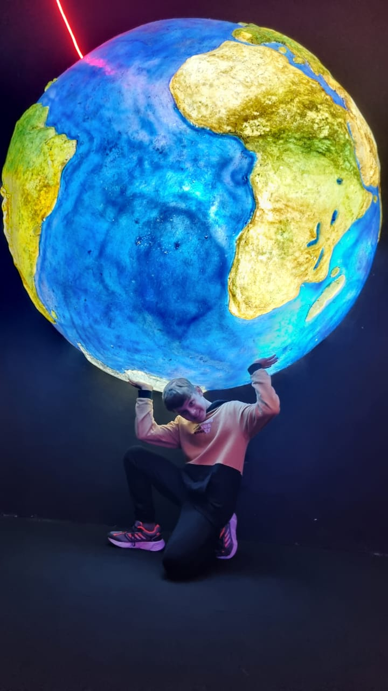
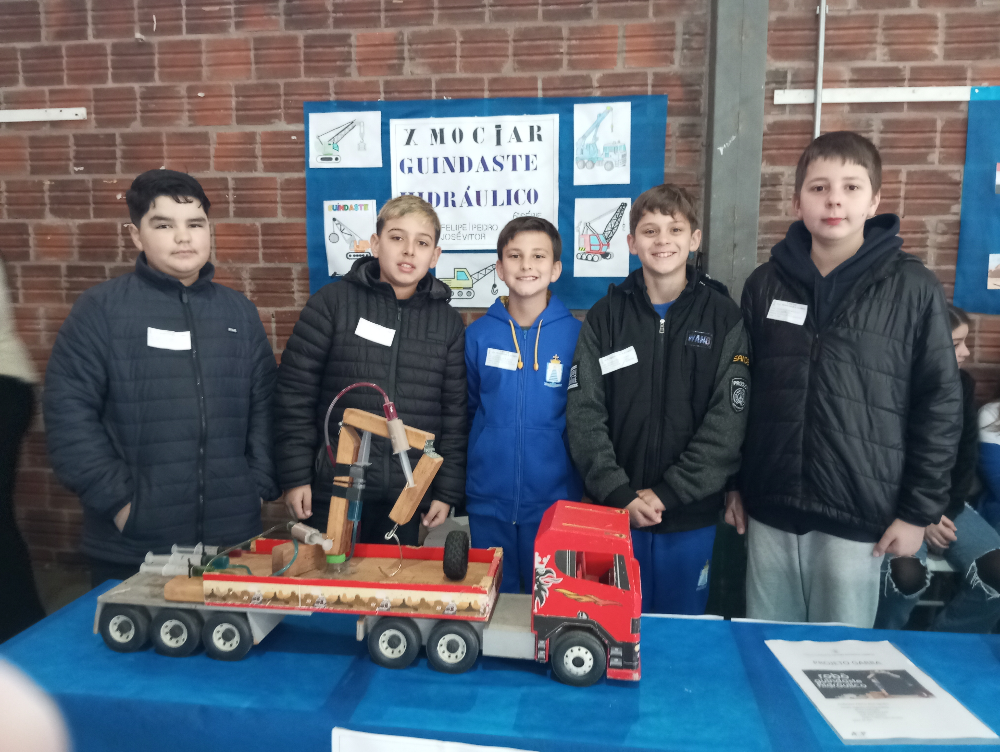

PROJ · 01
web
Tela de Login
Uma tela de login feita acompanhando um vídeo tutorial, onde aprendi o porquê de cada comando existir, não só como copiá-lo.
Portfólio / Jovem Aprendiz
Construo coisas com as mãos antes de construir com código — braços hidráulicos, robótica de garagem e telas que funcionam de verdade.
Ver projetos
Uma tela de login feita acompanhando um vídeo tutorial, onde aprendi o porquê de cada comando existir, não só como copiá-lo.

Meu primeiro projeto para a feira de ciências da escola (6° ano): um braço hidráulico movido a seringas, feito com o grupo — vencemos a feira.
Uma evolução do projeto anterior (7° ano): o mesmo tipo de braço, desta vez robotizado. Ao lado, um vídeo dos testes de movimento.